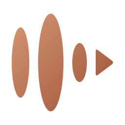
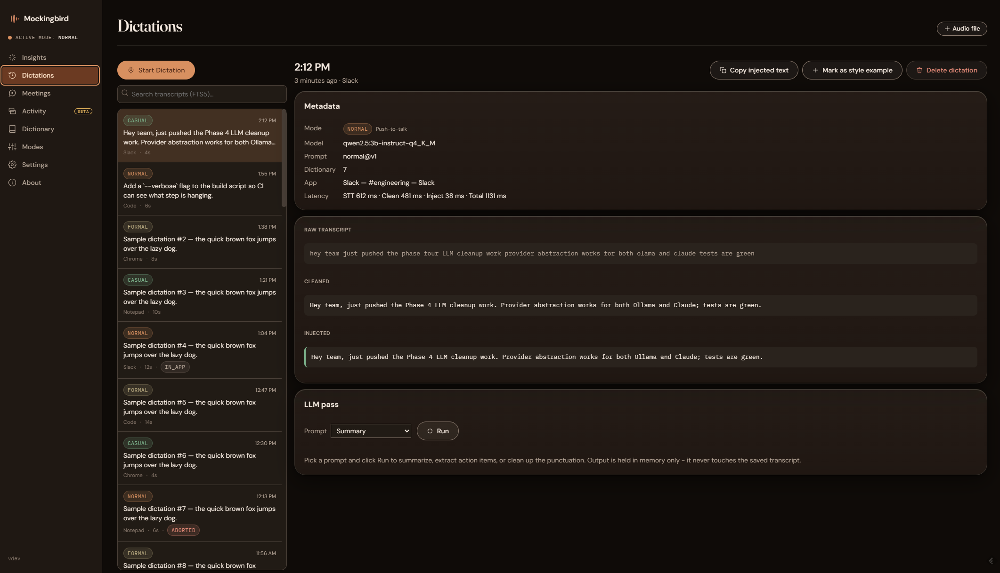
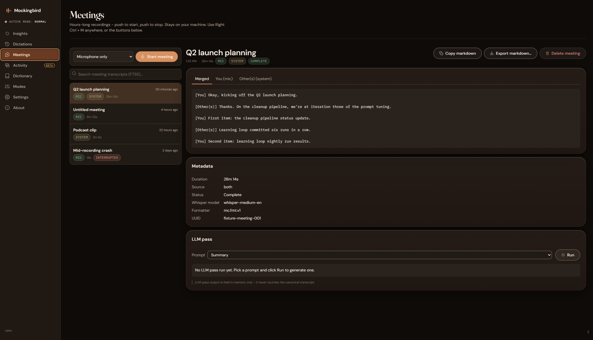
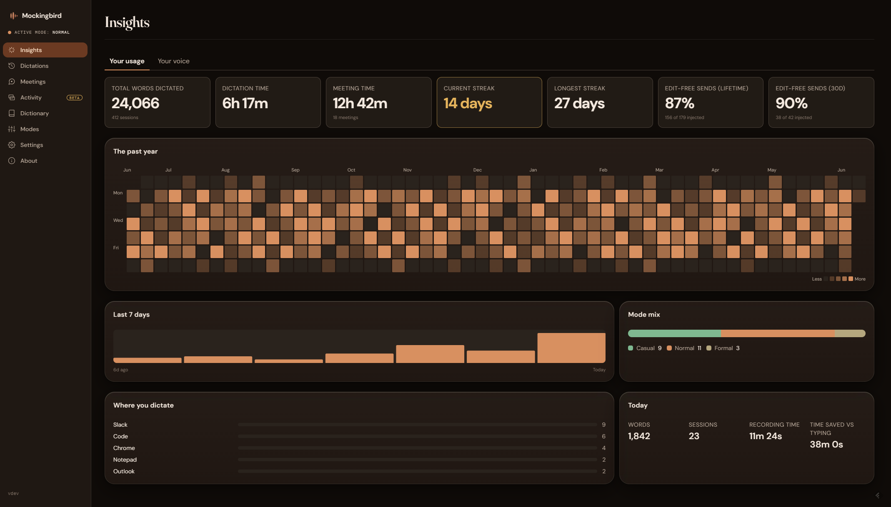

Voice dictation
Press a global hotkey, speak, and the transcript pastes into whatever app has focus. Speech-to-text runs locally via Whisper. Optional cleanup polishes disfluencies and applies your custom dictionary.

Local-first voice dictation and meeting capture for Windows and macOS. Knowledge graph capture on Windows today. Fully on-device, zero telemetry.
Download for Windows Build for macOS View on GitHub
Beta release. Windows 10+ has a downloadable installer; macOS 15+ (Apple Silicon) is a source build you compile yourself - steps below.
This is a reference implementation built for one developer's daily use and published freely. Pull requests are welcomed but not prioritized. If you want a feature or fix that has not been shipped, the recommended path is to fork the project.
Press a global hotkey, speak, and the transcript pastes into whatever app has focus. Speech-to-text runs locally via Whisper. Optional cleanup polishes disfluencies and applies your custom dictionary.
Records the microphone and system audio on separate channels, transcribes each locally, then merges them with speaker attribution. A post-call summary is available if you opt in to a local or cloud LLM.
A fast-note mode that extracts entities and tags from every snippet, then projects them into wiki-linked Markdown. Optional Obsidian vault sync turns captured fragments into a navigable knowledge base.
Windows only for now. The knowledge graph, activity capture, and mobile sync layers have not yet been ported to macOS.



Mockingbird runs entirely on your machine. No telemetry. No analytics. No phone-home. API keys for optional cloud surfaces (Claude, Unsplash) are encrypted via the OS keystore - Windows DPAPI on Windows, the Keychain on macOS - and never leave your computer except in the direct API call you opted into.
More info, then Run anyway.
There is no signed installer or .dmg for macOS - it is a source build you
compile yourself. You do not need full Xcode, just the Command Line Tools. Requires
macOS 15+ (the ScreenCaptureKit floor for meeting capture).
xcode-select --install), cmake (brew install cmake),
Rust 1.77+, and Node 20+.
cargo tauri build. No CUDA
wrapper is needed on macOS - STT is Metal-accelerated automatically.
.app from target/release/bundle/macos/.
The first launch is blocked by Gatekeeper because the build is unsigned - right-click
the app, choose Open, then confirm. macOS remembers the choice afterward.
Full installation walkthrough including model setup and optional cloud LLM configuration: INSTALL.md. macOS build background lives in the macOS implementation notes.
The beta is not code-signed. Windows treats unsigned installers as unknown publishers and prompts you to confirm. This is the same friction every indie Windows app hits before paying for a code-signing certificate. See SECURITY.md for details on what we do and do not sign.
Yes - on Apple Silicon, as a source build you compile yourself. There is no signed
installer or .dmg; you build the .app with the Command Line
Tools, Rust, and Node (see the macOS quick start). It needs
macOS 15+, and the first launch requires the Gatekeeper right-click to
Open because the build is unsigned. Dictation and meeting capture both
work on macOS with the same local-first, on-device model as Windows. The knowledge graph,
activity capture, and mobile sync layers are Windows-only for now and
have not yet been ported. Background:
the macOS implementation notes.
Locally - %LOCALAPPDATA%\Mockingbird on Windows,
~/Library/Application Support/com.dustin.mockingbird on macOS. Transcripts,
settings, the SQLite database, and any vault projection all stay on your machine. Full detail
in
PRIVACY.md.
Yes. Mockingbird talks to a local Ollama server out of the box and works with any chat model Ollama supports. Cloud providers (Claude) are optional and opt-in.
Yes, MIT licensed. Source at github.com/duz10/mockingbird.
Read CONTRIBUTING.md first. Mockingbird is a reference implementation; the maintainer ships features on their own schedule. Forks are the recommended path for anyone who needs something that has not been built.
Built with Tauri 2, Rust, React 19, TypeScript, Tailwind v4, SQLite, whisper.cpp, Silero VAD, and ONNX Runtime.